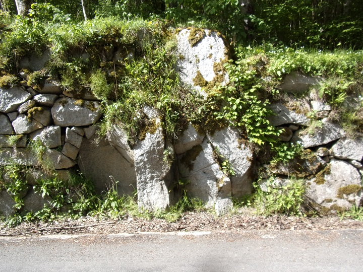
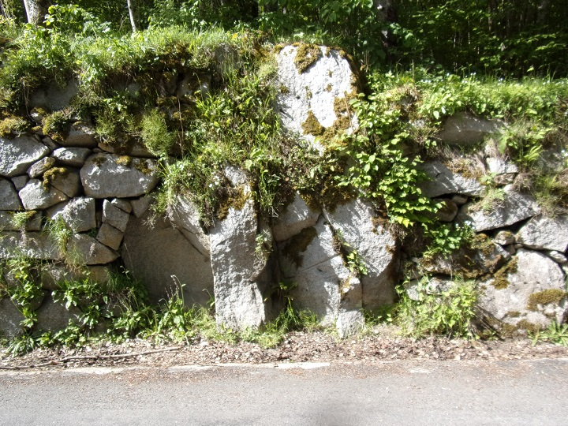

En prolongation des Gorges de Saint-Georges en venant de Saint Martin Lys, s'élève la route longeant ce petit affluant de l'Aude qu'est l'Ayguette. Cette route départementale n° 17 a gardé son n° depuis l'époque napoléonienne où la route de Quillan à Roquefort de Sault, passant par la Pierre-Lys, a été classée. (J'essaierai ultérieurement d'en faire son historique sur cette partie partant du Cap de Bouc).
Dans un premier temps (dans cette version brouillon), je vais d'abord déposer dans cette page les photos de cette route accrochée à la montagne (à compléter), de Sainte Colombe sur Guette et de Counozouls : les seuls village arrosés par l'Ayguette.
Ayguette, départementale 17 au Cap de Bouc
Ayguette, vue de la route suivant l'Aude depuis la départementale 17 au Cap de Bouc
Usine hydroélectrique de Nantilla, vue depuis la départementale 17 au Cap de Bouc
Canalisation alimentant l'Usine hydroélectrique de Nantilla

Sainte Colombe sur Guette - Carrières de dolomie rive gauche et droite de l'Ayguette
Ce sont ces carrières qui ont alimenté longtemps l'usine de dolomie de la gare de Saint Martin Lys


Nous quittons la départementale N° 17 juste avant d'arriver à Roquefort de Sault (pour une autre fois...) et prendre la route du col de Jau, l'ancienne route des contrebandiers
Directement visible depuis la départementale 84 du col de Jau, le menhir nous montre la direction du village de Counozouls


Le chemin de Counozouls à Roquefort de Sault en direction de Counozouls


Le village de Counozouls


Pour finir le circuit autour de Counozouls


 
